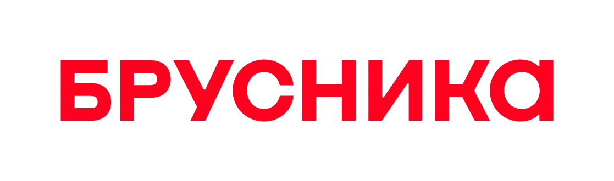
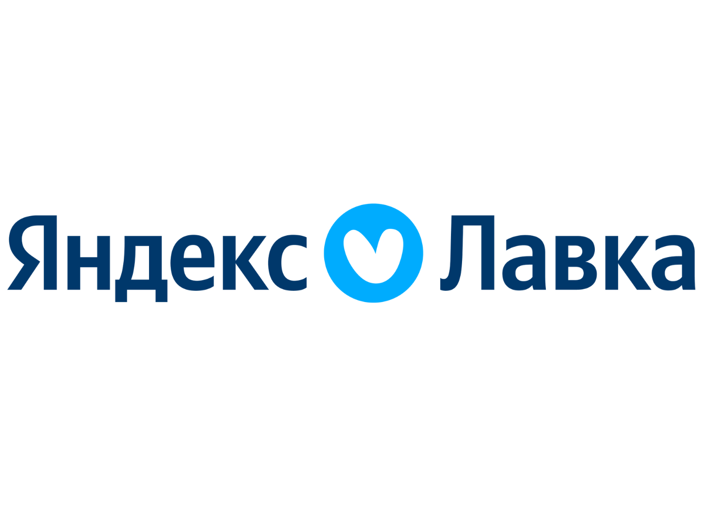

Оба автора
каждую встречу
Антон и Миша ведут программу вместе. Агентский взгляд извне встречается с опытом управления брендом внутри компании.
Прикладной опыт лидеров рынка
в создании и управлении брендами
Старт мастерской
Выбрать формат участия ↗Мастерская пройдет один раз
Абсолютно новый авторский контент (без повторения с других программ Антона и Миши)
Два взгляда набренд, однасовместная работа
От авторов которые помогали создавать бренд-стратегии:


ВКонтакте+ 50 других компаний и брендовЗа полтора месяца интенсивной работы вы пройдёте путь создания, внедрения и управления бренд-стратегией вашей компании.
От «травмы предпринимателя» как источника идеи бренда до бренд-ориентированной культуры, бюджетирования и влияния на P&L.
Антон и Миша ведут программу вместе. Агентский взгляд извне встречается с опытом управления брендом внутри компании.
Приносите собственный бренд, компанию или клиентскую задачу. Разбирайте инструменты и применяйте их к своей работе.
Международная академическая база и локальный опыт создания брендов, на которые ориентируется рынок.
Идея мастерской родилась во время многочасовых разговоров Миши и Антона о том, как должен быть устроен процесс создания бренда в организации.
Предприниматели, директора по маркетингу и бренд-директора хотят сделать бренд еще одним источником конкурентного преимущества, но «работа над созданием бренда» часто сводится только к появлению еще одного PDF-файла с «пирамидой».
Мастерская — попытка исправить это.
Основа идентичности и ДНК вашего бренда
Коммуникации, клиентский опыт, HR-бренд и культура
Следующие шаги и KPI для функций компании
Рабочая тетрадь и ИИ-агенты для работы с брендом
Чтобы сделать бренд источником конкурентного преимущества и связать его со стратегией компании.
Чтобы собрать систему управления брендом: от идентичности до внедрения и метрик.
Каждую неделю: 3 часа лекций
и обсуждений в субботу.
В рабочем формате — задания
и Q&A с обратной связью авторов.
Типология брендов и подходов к их созданию и управлению. Основы и инструменты формирования идентичности.
Проработаем: инструментарий формирования бренда вашей организации и его тип
Связь бренда с рынком и его типом, конкурентами и целевыми аудиториями. Влияние трендов и «чёрных лебедей».
Проработаем: проанализируем внешнюю среду компании, составим карту влияния на бренд
Типы стратегий брендов. Особенности премиального сегмента и сложного B2B. Методы описания идентичности.
Проработаем Основу идентичности бренда и его ДНК в виде платформы.
Как сделать бренд-платформу основой коммуникации, клиентского опыта в офлайне и онлайне, HR-бренда и культуры организации.
Проработаем План активации бренда по всем каналам и точкам контакта.
Связь бренд-стратегии с общей стратегией компании. Метрики эффективности для вашего бренда. Следующие шаги и план активации с KPI для каждого отдела.
Проработаем Карту внедрения и активации бренда.
Два факультатива на выбор. Каждый — дополнительные две недели к формату «Смотрю и работаю».
CEP и DBA. Продвинутая модель BHT и её связь с P&L. Обоснование инвестиций в бренд перед CFO и советом директоров.
Результат: карта метрик для презентации CFO.
Бренд в массовой культуре, семиотика, комьюнити, тренды и хайпы.
Результат: карта культурного взаимодействия бренда.
Управление брендом независимо от создателя. Влияние культуры организации, сильный HR-бренд и уникальное EVP.
Результат: план и инструменты формирования культуры.
Бренд как основа стратегии организации. KPI во всех функциональных направлениях. Стоимость бренда в балансовом отчёте.
Результат: связь функций организации с влиянием на стоимость бренда.
2 лекции + 2 Q&A-сессии + 69 900 ₽
Доступ к системе и инструментам
или работа над своим брендом
с обратной
связью авторов.
Для тех, кому нужен доступ к системе, способу мышления и рабочим приёмам.
Без участия в Q&A и разбора собственного проекта.
Приносите свой бренд или клиентский проект и шесть недель работаете вместе с нами.
На выходе — собственная бренд-стратегия и подробный план её активации и управления.
К рабочему формату можно добавить факультатив:
«Продвинутый бренд-директор»
или «Бренд-ориентированный бизнес».
Да. В программе разбираем разные типы стратегий, включая сложный B2B и премиальный сегмент. В рабочем формате вы применяете инструменты к своему бренду или клиентскому проекту.
В субботу — 3 часа лекций и обсуждений с двумя авторами. В формате «Смотрю и работаю» между встречами вы выполняете задания, а на Q&A разбираете результаты и получаете обратную связь.
Оба формата включают неограниченный доступ к записям лекций, инструменты и рабочую тетрадь.
Нет. Для мастерской создан новый контент без повторения других программ Миши и Антона.
Старт мастерской — 31 октября 2026 года. Лекции и обсуждения проходят по субботам. Точное время встреч будет объявлено отдельно.